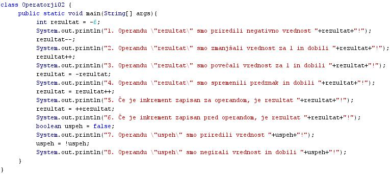
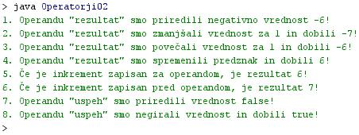

OPERATORJI NA ENEM SAMEM OPERANDU
- Aritmetièni operatorji potrebujejo najmanj dva operanda.
- Za seštevanje, odštevanje, množenje in deljenje sta potrebni namreè najmanj dve števili.
- Unarni operatorji pa so simboli za operacije, ki se izvedejo na samo enem operandu.
- Java premore sledeèe unarne operatorje
- Plus operator "+", ki doloèi pozitivni predznak vrednosti operanda.
- Minus operator "-", ki doloèi negativni predznak vrednosti operanda.
- Inkrementalni operator "++", ki poveèa vrednost operanda za 1.
- Dekrementalni operator "--", ki zmanjša vrednost operanda za 1.
- Operator logiènega komplementa "!", ki negira vrednost booleovega operanda.
- Inkrementalni in dekrementalni operator lahko zapišemo pred operandom ali za operandom.
- Èe je operator pred operandom, je imenu operanda prirejena nova vrednost, torej tista po poveèanju ali pomanjšanju njegove vrednosti za 1.
- Èe je operator zapisan pred operandom, je imenu operanda prirejena nova vrednost, torej tista po poveèanju ali pomanjšanju njegove vrednosti za 1.
- Èe je operator zapisan za operandom, je imenu operanda prirejena stara vrednost, torej tista pred poveèanjem ali pomanjšanjem njegove vrednosti za 1.
- Ta razlika v položaju operatorja glede na operand postane pomembna, èe je izraz z inkrementom ali dekrementom operanda del kakega daljšega izraza ali enaèbe.
VAJA 13:
- V okolju za pisanje izvorne kode v jeziku Java, za prevajanje in za interaktivno delo zapiši program "Operatorji02". Pomagaj si s sliko.
- Kodo lahko tudi kopiraš iz te datoteke in jo prilepiš v okolje, v katerem pišeš programèke. Pozor: koda, ki jo boš kopiral/a, vsebuje eno, dve, tri ali štiri napake. Èe želiš, da bo program deloval, moraš napake odkriti in jih odpraviti.
- Izvorno kodo shrani pod imenom "ImePriimek13.java". ImePriimek je seveda tvoje lastno ime in priimek.
- Datoteko "ImePriimek13.java" prevedi.
- Prevedeno datoteko zaženi, preveri rezultat v interaktivnem oknu in poklièi profesorja, da vidi rezultat.
1. Vprašanja:
1. Kakšna je bistvena razlika med aritmetiènimi in unarnimi operatorji?
2. Zapiši unarne operatorje, njihove simbole in opiši njihove naloge.
3. Kaj je dekrement?
4. Kaj je inkrement?
5. Kaj je operator? Zapiši unarne operatorje, ki jih najdeš v programu te uène enote, in jim pripiši vrstno številko stavka, ki prikaže rezultat teh operandov.
6. Kaj je operand? Napiši operande, ki jih najdeš v programu te uène enote, in jim pripiši vrstno številko stavka, v katerem so ti operandi uporabljeni.
7. Zapiši imena vseh spremenljivk, ki smo jih deklarirali v programu v tej uèni enoti.
8. Zapiši podatkovne tipe vseh spremenljivk, ki smo jih deklarirali v programu v tej uèni enoti.
9. Zapiši zaèetne vrednosti vseh spremenljivk, ki smo jih deklarirali v programu v tej uèni enoti.
10. Zapiši zaporedno številko stavka v izpisu, kjer se vrednost operanda po poveèanju za 1 ne spremeni. Kaj je temu vzrok?
2. Zapiši od ene do pet kljuènih besed, ki povzemajo vsebino te uène enote.
3. Povezave do dodatnih informacij.
Spletni priroènik proizvajalca programskega okolja Java. To je podjetje Sun.
|